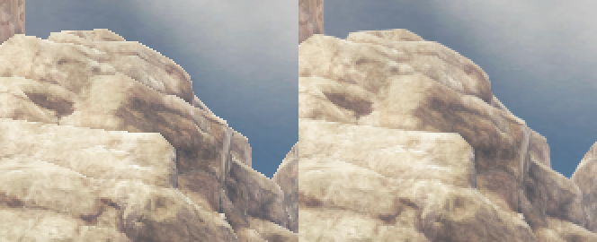
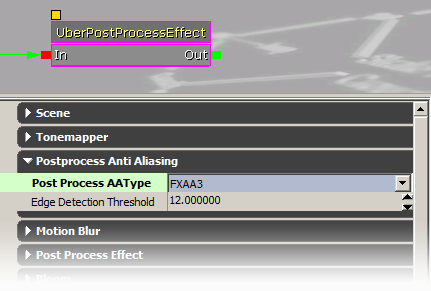

UDN
Search public documentation:
PostProcessAAKR
English Translation
日本語訳
中国翻译
Interested in the Unreal Engine?
Visit the Unreal Technology site.
Looking for jobs and company info?
Check out the Epic games site.
Questions about support via UDN?
Contact the UDN Staff
日本語訳
中国翻译
Interested in the Unreal Engine?
Visit the Unreal Technology site.
Looking for jobs and company info?
Check out the Epic games site.
Questions about support via UDN?
Contact the UDN Staff
UE3 홈 > 포스트 프로세스 이펙트 > 포스트 프로세스 앤티 앨리어싱 이펙트
포스트 프로세스 앤티 앨리어싱 이펙트
문서 변경내역: Martin Mittring 작성. 홍성진 번역.
|  |
 |
| 위 그림은 먼 거리 바위(를 더욱 잘 보이게 하기 위해 2 배 확대한 것)입니다. 왼쪽: 앨리어싱(계단현상)땜에 죽겠네요. (MSAA 없음) 오른쪽: 똑같은 이미지에 PostProcessingAA 를 적용한 것입니다. |
개요
- 콘텐츠가 너무 작은 경우 (예: 와이어프레임 선)
- 콘텐츠가 천천히 움직이는 경우 (예: 카메라를 살짝 움직이면서 계단을 바라볼 때)
- 콘텐츠가 선이 두꺼워야(hard edge) 할 때 (예: 수작업 아트나 텍스트)
 |
| 이 이미지는 대비가 강한 곳에 계단현상이 크게 눈에 띈다는 것을 확실히 보여줍니다. 그 부분을 위 방법으로 처리해 줬습니다. 그러나 이미지 전체적으로 보면 선명도가 약간 떨어집니다. 여기서 MLAA 는 트윅이 가능한 반면 FXAA 는 제어 방법이 없습니다. |
활성화 방법

타입을 Activate 로 바꾸고, 메서드(를 MLAA 나 FXAA 로,) 와 퀄리티 레벨을 바꿉니다. Threshold(임계값) 프로퍼티는 MLAA 구현에만 사용됩니다. 다른 방법으로는 게임의 PostProcessAAType 콘솔 변수를 사용해도 됩니다:포스트 프로세스 앤티 앨리어싱 타입을 덮어쓸 수 있도록 해 줍니다. <0: 포스트 프로세스 세팅 사용 (디폴트: -1) 0: 끔 1-6: FXAA 프리셋 0:낮은 퀄리티 .. 5:퀄리티는 매우 높지만 느림 (1 패스) 7: MLAA (추가 렌더 타겟 (.ini 에서 bAllowPostprocessMLAA=True 도) 필요, 3 패스)추가 메모리가 필요한 MLAA 는 명시적으로 켜 줘야 합니다. (BaseEngine.ini 등에서) ini 세팅을 바꿔 활성화시켜 줘야 하는데, 다음 부분을:
bAllowPostprocessMLAA = False이렇게 바꿉니다:
bAllowPostprocessMLAA = True
scale toggle bAllowPostprocessMLAA
구현 세부사항
- 1 패스
- 이방성(anisotropic) 텍스처 룩업 필요
- 3 패스
- 각기 다른 퍼포먼스/퀄리티 여러 레벨
- 중간 렌더 타겟 메모리 추가 필요 (최적화 가능)
- 내부 디테일에 블러링 살짝 덜함
- 45 도 에지가 더 넓어 보임
지원 플랫폼
- FXAA: DX9, DX11, Xbox360, PlayStation3
- MLAA: DX9, DX11 (Xbox360, PlayStation3 는 불확실)
참고
- Intel 의 Morphological Antialiasing 형태학적 앤티앨리어싱 (MLAA)
http://visual-computing.intel-research.net/publications/papers/2009/mlaa/mlaa.pdf
감사합니다.
- MLAA 를 개발해 준 Intel.
- GPU MLAA 를 구현해 준 AMD CAS 팀.
- FXAA 를 구현해 준 NVIDIA.